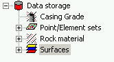

The data storage contains data that is or can be used in the current GEOMEC model. It is represented as a tree below the model tree. Imported data from external files are added to the data storage tree which can then be assigned to the model by dragging to the model tree.

The data storage tree contains the following main nodes
|
Contains the materials for the well paths using the DCasint application. This leaf is only visible when DCasint is enabled. |
|
Contains 2D and 3D point- and elementsets and their attached properties. Right-click any set and click 'Attributes' to enter the Pointset attributes dialog, which allows you to assign properties or create new properties using the RPN calculator. |
|
This branch is used to create and maintain materials. Note that you can use one material definition in multiple formations. Editing the material at one location (e.g. in one formation or in the materials entry in the data storage tree) will change the material for all formations that use it. |
|
Surfaces are generated from 2D pointsets or elementsets using the Pointset attributes dialog. Surfaces can be used to create horizons or faults, or can be used as parts of the boundary of a tetrahedron model. |
See Data storage tree for general options.
The "Change" button above the GEOMEC Tree can be used for Multiple deletions.